Schleuse: von Ortsgrenze Zollbrück (ca. 100 m unterhalb Parkplatz) bis zur Talsperre Ratscher. Der Bereich unterhalb Rappelsdorf ist Jagdgebiet. Vorsicht Jagdzeiten beachte.
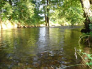
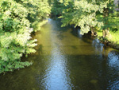
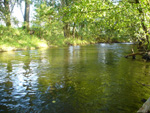
(weiter Foto´s in der Fotogallerie)
Nahe: von der Brücke Schleusingerneundorf bis Eisenbahnbrücke unterhalb Hinternah und von der Brücke Schwimmbad Schleusingen bis Höhe Bahnhof Schleusingen, Flugangelstrecke von der Ortslage Hinternah (ab Wiedereinmündung Mühlgraben) bis zum Preussischen Wehr (Braunstädter Wehr) oberhalb Schleusingen.
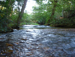
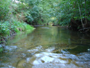
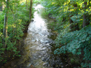
(weiter Foto´s in der Fotogallerie)
Erle: im Stadtgebiet Schleusingen, von Einmündung der Vesser unterhalb der Brücke zum Glaswerk bis zur Mündung in die Nahe
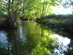
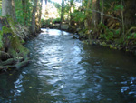
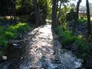
(weiter Foto´s in der Fotogallerie)
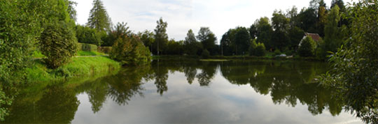
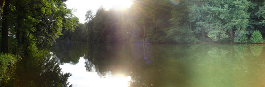
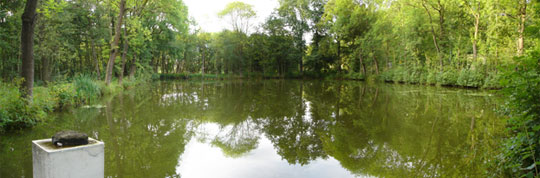